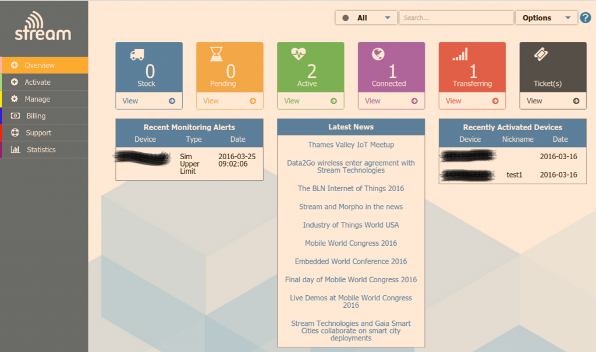

Recently investigating using GSM/3G connectivity instead of Ethernet/WiFi.
The benefits include:
- Not having to be reliant on a network for connectivity which you have no control over e.g. installing an energy monitor in a school / university / large business / industry / hydro generator
- Not having to involve friendly network admins & set static IP
- Easier availability of connectivity - assuming GSM coverage which is pretty good these days
The disadvantages include:
- Higher cost
- Need to be more aware of data transfer rates
- Higher power (not really suitable for battery operation!)
While investigating GSM connectivity options we quickly realized that it was not as simple as obtaining a local Pay-as-you-go SIM card and inserting it into a USB dongle. GSM carrier data tariffs are not really suited to IoT data logging applications i.e we don't need a GB's of data and trying to establish communication to craft a custom data plan is a non-starter unless you have 10K's of devices.
We saw the need to work with a dedicated GSM IoT provider. We made contact with many providers and Stream emerged as the best match for us. We have started testing with their multi network platform and impressive back-end admin dashboard and open-API.
We have estimated the (retail) cost for a GSM solution will be £40 for USB dongle + £3.80/month data cost (assuming 250Mb data ). The question is if we were to launch a bundled GSM connectively option would there be an interest? This would work out of the box with provisioned SIM cards and USB modem hardware available with emonBase / emonPi purchase via the shop. Ongoing monthly charge would be handled by ourselves via Emoncms account.
Initially service will be launched in the UK but could be rolled out to European coverage with minimal issues.
I look forward to hearing your thoughts....
Re: GSM 3G emonBase / emonPi connectivity platform offering - feedback wanted
Mmm guess not as much interest in GSM connectivity options as a I thought!
Re: GSM 3G emonBase / emonPi connectivity platform offering - feedback wanted
For the US folks - I was reading through the Latest News section and came across this: Stream Technologies to Provide Services in USA. I haven't found anything about the costs yet. Still reading...
Re: GSM 3G emonBase / emonPi connectivity platform offering - feedback wanted
Yes in my discussions with Stream they indicated that US deployment was possible. I will try and find out pricing. It might be easier if we were to partner with someone with feet on the ground in the US
Re: GSM 3G emonBase / emonPi connectivity platform offering - feedback wanted
I am definitely interested in a GSM solution but just haven't have the time to post, Ironically I have been tied up trying to gain network access at a couple of sites.
I think this would have more appeal (certainly to me) if it's use wasn't restricted to the emonpi/emonbase image and or via emoncms.org. I think the emonbase/pi devices and images, and the project in general would benefit greatly from this idea but to get the numbers up to a viable amount it should be an independent device that appeals to non-OEM'ers too, as you know options for "easy" M2M GSM are limited, if not non-existent so demand could gather pace quite quickly, and as great as the emonbase/emonpi image is it's along way from the "rock-solid" image that would be more in keeping with an inaccessible remote forwarding device.
I have been considering this option for a long time and have many thoughts and notes on reducing data usage and also on making the remote device manageable without having to access it via ssh or running it as a web server.
Where can I get my hands on a unit to try?
Is there any minimum contract and/or minimum/maximum use restrictions?
What service provider does it use? ie what's the coverage/service like?
I have a real application for this tech, it is early days for the venture but so far the time and effort involved in the networking side at most (if not all) of the sites I have tackled out weigh the effort to install monitoring. the time I have spent at one of these sites trying to negotiate network connectivity would easily pay for half a dozen dongles and their on going charges for at least a couple of years so the costs involved are certainly worth considering as standard issue to remove any networking issues upfront.
Paul
Re: GSM 3G emonBase / emonPi connectivity platform offering - feedback wanted
Hi Paul,
Thanks for the feedback. I'm happy you can see the benefit of a GSM solution. I'm convinced there would be a market if correctly priced and easy to use.
Yes, it would be a M2M generic SIM card that could be used in any device together with a custom M2M data plan from us. We would probably start on the Three network, but Stream supports every platform. We're currently in the tasting phase, I will PM you regarding a demo SIM card.
Currently testing Stream IOT-X back-end manager:

Re: GSM 3G emonBase / emonPi connectivity platform offering - feedback wanted
Thanks Glyn - I've just replied to your PM.
Paul
Re: GSM 3G emonBase / emonPi connectivity platform offering - feedback wanted
Hi,
I am also very interested in a GSM or LPWA solution.
When installing OEM technology on my client's site, it is always very complicated to connect the Emonbase to Internet. I am still facing security problems (firewall, proxy, MAC filtering, ...) or stability problems. It takes me more time than the rest of the work ... Like Paul, I will be happy to pay for a standalone solution.
Here are several options I identified depending on the context:
- adding GSM support to the EmonBase when using a lot of sensor nodes (or fast update).
- adding Sigfox support to the EmonBase (using this) when using few sensor nodes (or slow update). The sigfox network is already deployed in France and in some countries/cities in Europe. One can send one message every 10 minutes (12 bytes maximum). It costs 1€/month.
- adding Sigfox support to the sensor node.
- adding LORAWAN support to the sensor nodes. Then two options : 1 having access to a free LORAWAN Gateway (by example, see the things network). 2. having its own LORAWAN Gateway that will forward the message on Internet using 3G
Glyn, the GSM service that you are testing, will it be available in France ?
Anyway, I will be happy to help you on this.
Eric
Re: GSM 3G emonBase / emonPi connectivity platform offering - feedback wanted
@Eric thanks for your feedback. Yes lorawan and Sigfox are also on our radar to support, although GSM has the best coverage worldwide at the moment. Yes, it will be available in France.
Re: GSM 3G emonBase / emonPi connectivity platform offering - feedback wanted
Great to hear it will be available in France. Looking forward to testing it!
Using this service, will we be able to connect to the RPI through SSH and HTTP?
Note sure, as the RPI on 3G will be behind a NAT router. Ports closed, IP address changes, ....
Anyway some workaround :
- SSH connect back : http://www.thirdway.ch/En/projects/raspberry_pi_3g/index.php
- Hamachi, a hosted VPN. Free, up to 5 computers : https://www.vpn.net/
Eric